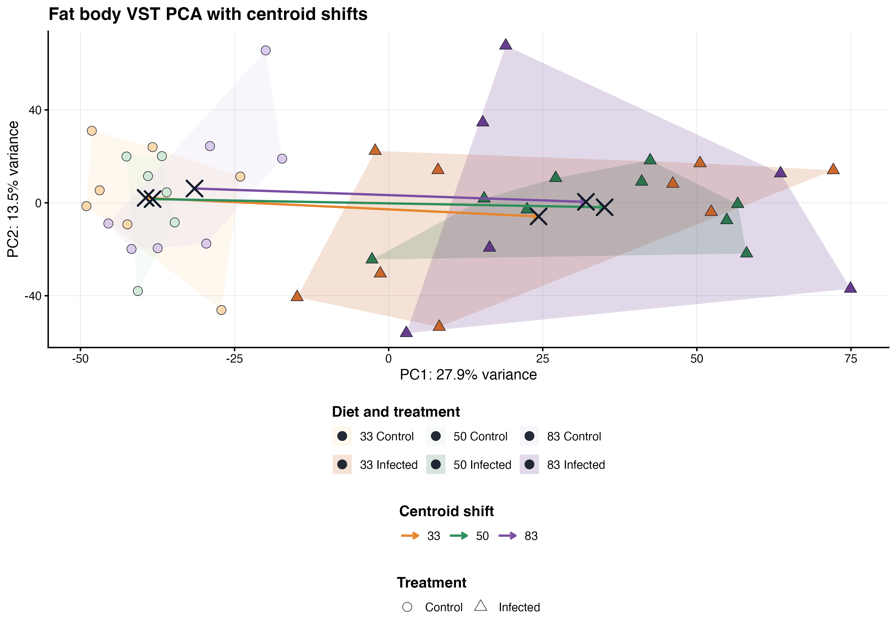

This reproducible R Markdown
analysis was created with workflowr (version
1.7.2). The Checks tab describes the reproducibility checks
that were applied when the results were created. The Past
versions tab lists the development history.
Great job! The global environment was empty. Objects defined in the
global environment can affect the analysis in your R Markdown file in
unknown ways. For reproduciblity it’s best to always run the code in an
empty environment.
The command set.seed(20260427) was run prior to running
the code in the R Markdown file. Setting a seed ensures that any results
that rely on randomness, e.g. subsampling or permutations, are
reproducible.
Great! You are using Git for version control. Tracking code development
and connecting the code version to the results is critical for
reproducibility.
The results in this page were generated with repository version
e67684d.
See the Past versions tab to see a history of the changes made
to the R Markdown and HTML files.
Note that you need to be careful to ensure that all relevant files for
the analysis have been committed to Git prior to generating the results
(you can use wflow_publish or
wflow_git_commit). workflowr only checks the R Markdown
file, but you know if there are other scripts or data files that it
depends on. Below is the status of the Git repository when the results
were generated:
Note that any generated files, e.g. HTML, png, CSS, etc., are not
included in this status report because it is ok for generated content to
have uncommitted changes.
These are the previous versions of the repository in which changes were
made to the R Markdown
(analysis/37-exon-only-interaction-model.Rmd) and HTML
(docs/37-exon-only-interaction-model.html) files. If you’ve
configured a remote Git repository (see ?wflow_git_remote),
click on the hyperlinks in the table below to view the files as they
were in that past version.
This page reruns the complete main-chromosome interaction model from
exon-only featureCounts. The 44-sample cohort, rRNA exclusion list,
placement filter, expression filter, model formula, and significance
thresholds match the primary transcript-plus-exon page.
Step 1 - Restrict placement
Keep non-rRNA genes assigned to the main nuclear chromosomes.
Step 2 - Fit interaction
Test diet, infection, and diet-by-infection effects with the
44-sample cohort.
Step 3 - Interpret structure
Use coefficients and PCA to summarize the conservative host
signal.
This is the analysis-cohort, main-chromosome version of the
interaction model. It keeps every valid library after excluding QC
outlier 1044.
Only genes assigned to a nuclear chromosome in the official
assembly-placement table are tested. Annotated rRNA, mitochondrial
genes, unplaced scaffolds, and count rows without a unique official
gene-placement record are excluded before expression filtering,
normalization, VST, and DESeq2.
This page fits the full model for the manuscript question: does
infection response depend on diet?
This is the most formal model in the site because it uses all samples
together and estimates diet, infection, and diet-by-infection terms in
one DESeq2 design. The interaction terms are especially important: they
ask whether the infected versus control response changes when diet
changes, rather than assuming one single infection response across all
diets.
The default DESeq2 design is:
~ Diet + Treatment + Diet:Treatment
Setup and data loading
The metadata are matched to the count matrix by sample label before
modelling. The reference diet and treatment are set in the YAML header
so the same page can be rerun with a different baseline if needed. With
the current settings, the main infection coefficient is interpreted in
the reference diet, and the interaction coefficients describe how other
diets differ from that baseline infection response.
DESeq2 estimates gene-level dispersion and fold-change parameters
from raw counts after normalization for library size. The model includes
both main effects and interaction terms so that diet differences,
infection differences, and diet-specific infection responses can be
inspected from the same fitted object.
The coefficient tables below test particular diet comparisons. In
parallel, a likelihood-ratio test compares the complete model with a
model lacking every diet-by-infection term. This provides one gene-level
test of whether allowing infection responses to differ among diets
improves model fit at all.
Exon-only omnibus diet-by-infection likelihood-ratio
test
count_definition
samples
genes_tested
omnibus_interaction_FDR_lt_0_05
Exon only
44
11140
0
Export model coefficients
Each non-intercept coefficient is exported as a full gene-level
table. Keeping all coefficients, rather than only significant genes,
makes it possible to change thresholds later, compare ranked genes, and
reuse the same outputs for overlap and enrichment.
extract_result <- function(coef_name) {
# Each coefficient is written as a table so it can be inspected or reused.
res <- DESeq2::results(dds, name = coef_name, alpha = params$alpha,
cooksCutoff = FALSE)
res_df <- as.data.frame(res)
res_df$gene_id <- rownames(res_df)
res_df$coefficient <- coef_name
res_df$significant <- !is.na(res_df$padj) &
res_df$padj < params$alpha &
abs(res_df$log2FoldChange) >= params$lfc_threshold
res_df
}
all_results <- do.call(rbind, lapply(model_coefficients[-1], extract_result))
write.csv(all_results, file.path(out_dir, "all_model_coefficients.csv"),
row.names = FALSE)
summary_by_coef <- aggregate(significant ~ coefficient, all_results, sum)
names(summary_by_coef)[2] <- "n_significant_genes"
knitr::kable(summary_by_coef)
The coefficient table above is exact, but a barplot makes the model
easier to scan. Positive and negative coefficients are shown separately
because the biological interpretation of the sign depends on the
coefficient being read: main diet effects, the main infection effect,
and interaction effects each have their own baseline.
This section pulls out the infection coefficient for the reference
diet. It is useful as a baseline, but it should not be read as the
infection response for every diet when interaction terms are
present.
Interaction coefficients are the direct test of whether infection
behaves differently under another diet relative to the reference diet.
These genes are often the most relevant to the diet-infection
interaction question, even when the main infection effect is large.
After fitting the model, the VST PCA provides a final sample-level
check on the same filtered genes that entered the model. This plot helps
connect the gene-wise coefficient results to the global expression
structure across diet and infection groups.
The primary PCA below is generated from this placed-chromosome,
all-sample expression matrix. It adds treatment centroids and
diet-specific centroid shifts while leaving individual sample labels out
of the panel. The same export is compiled with the other manuscript
panels on the publication
figure page.

Figure 1. Fat body PCA with treatment centroids
and diet-specific centroid shifts.